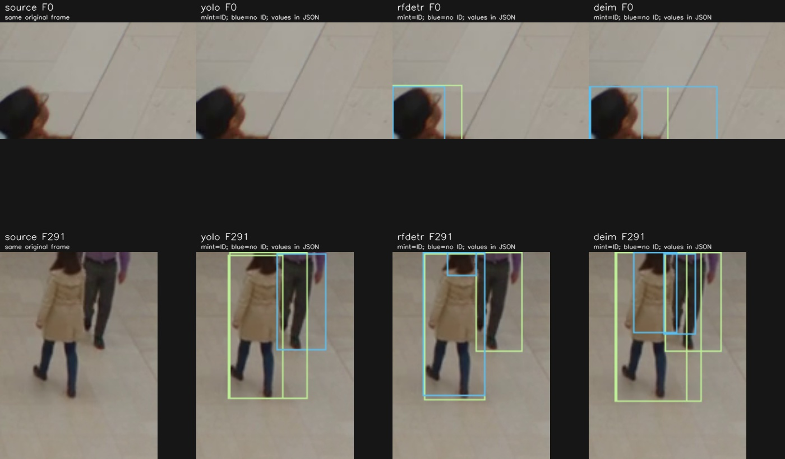

원본 미등록
원본 재생 오류
EXPERIMENTS
현재까지 입장 IN ↘
현재까지 퇴장 OUT ↗
현재 추정 재실ESTIMATE
전체 기록의 최종 재실
EVENT TIMELINE
재실 = 초기 인원 + IN − OUT · 동일 ID 반복 출입 포함
합성 데모 · 사전 생성 검출 좌표 · 집계·마스킹·탑뷰 검증 · YOLO 추론 제외
MODEL COMPARISON
같은 원본 · 서로 다른 측정 범위
01 / PIPELINE
YOLO26n FP16 · 640 / RF-DETR FP32 · 512 / DEIMv2 FP32 · 640
같은 ByteTrack·집계 규칙을 사용합니다. 정밀도와 입력 크기가 달라 모델 구조만의 효과로 해석하지 않습니다.
FPS는 반복 실행의 중앙값입니다. 이전 ‘검증 결과’의 24.08 FPS는 렌더·저장과 첫 워밍업을 포함해 측정 범위가 다릅니다. 촬영→표시 지연은 측정하지 않았습니다.
사용 중인 PC에서 GPU를 순차 실행했습니다. 전용 격리 벤치마크가 아니므로 반복별 변동을 함께 공개합니다.
| 모델 | 영상 | 입력 | IN / OUT | FPS | 구간 | ±0.5s | ID | VRAM | 기록 |
|---|---|---|---|---|---|---|---|---|---|
| 측정 기록 준비 중 | |||||||||
VRAM은 PyTorch 모델의 peak MiB입니다. 전체 장치 사용량이 아니며, 캐시 추적 표에는 ONNX Runtime 메모리를 누락할 수 있는 수치를 표시하지 않습니다.
02 / CACHED TRACKS
동일 YOLO 검출 캐시로 ByteTrack · TrackTrack · ReID를 비교합니다. ReID는 224 입력·GPU 조건을 별도로 표시합니다.
| 추적 | 영상 | ReID | IN / OUT | p50 ms | p95 ms | 구간 | ±0.5s | ID | 기록 |
|---|---|---|---|---|---|---|---|---|---|
| 측정 기록 준비 중 | |||||||||
반복 실행마다 얻은 p50 / p95의 중앙값과 범위를 표시합니다. 같은 영상의 반복은 정확도 표본을 늘리지 않습니다.
03 / SCOPE
AI 생성 원본 2개 · 원본만 본 AI 시각 검수 14건. 같은 클립의 시간·방향을 일대일로 대응합니다. 인물 ID가 맞는지 자동 검증한 결과는 아닙니다.

선택한 장면의 관찰입니다. 위 표의 시간·방향 대응과 별개이며, 전체 검출·인물 ID 정확도를 측정한 결과는 아닙니다.
EXPERIMENT PROTOCOL
데이터 · 통제 변수 · 평가 지표
로컬 앱: GPU 추론·카메라 연결 / 웹 뷰어: 결과 재생
01 / DATA
촬영 조건: 조명 · 밀집 · 부분 가림 · 양방향 · 머뭇거림 · 빈 장면
정답 작성: 검수자 2명 · 시각·방향 독립 기록 · 불일치 검토
02 / CONTROLS
모델·해상도·검출 임계값·추적 설정·카메라 위치·초기 인원·저장 옵션
출입선 · IN 방향 · 평면 바닥 기준점 4개
동일 궤적 · 경계 여유 0px / 8px · 중복 집계
ID 확정 검출 / 전체 사람 검출 · 가림 범위
03 / HYPOTHESES & MEASURES
초기 목표 제안 · 평가 전 확정 · 공통 표준 아님
| 검증 항목 | 가설 | 측정 | 초기 목표 제안 |
|---|---|---|---|
| 출입 집계 | 경계 여유의 중복 집계 감소 효과 | IN·OUT 각각 precision / recall / F1, 중복·누락, 가중 절대 집계 오차 | 일반 조건 precision·recall ≥95% 어려운 조건 ≥90% 집계 오차 ≤5% |
| 추정 재실 | 초기 인원·출입선에 따른 누적 오차 | 1초 간격 MAE, 절대오차 p95, 30분 종료 오차, 음수 원시 값 | MAE ≤1명 p95 ≤2명 30분 종료 오차 ≤2명 |
| 추적 유지 | 가림·교차 이후 ID 유지율 | 정답 ID와 비교한 IDF1 / HOTA, 정답 궤적 100개당 ID 변경 | IDF1 ≥80% HOTA·ID 변경은 조건별 분석 |
| 사람 가림 | ID 미확정 검출 포함 시 가림 누락 감소 | 수동 표시한 모든 사람-프레임을 분모로, 가려진 사람 면적 비율 검사 | 면적 ≥99% 가림인 표본 ≥99.5% 외부 제공 영상은 전체 검수 |
| 처리·지연 | 시각화·저장 사용 시 처리량·지연 | 5분 이상 × 3회, FPS·촬영→표시 p50/p95·누락률·프레임 나이·GPU 메모리 | 평균 ≥15fps 지연 p95 ≤300ms 별도 8시간 시험 비정상 종료 0회 |
04 / EVENT MATCHING
대응 조건: 같은 클립 · 같은 방향 · ±1.0초 · 일대일 매칭
혼잡 구간: 정답 궤적·공간 위치 추가 검토
민감도 분석: ±0.5초 · 허용 시간 사전 고정
PrecisionTP / (TP + FP)
RecallTP / (TP + FN)
F12TP / (2TP + FP + FN)
TP: 정답 대응 · FP: 오검출·중복 · FN: 누락
분모 0: N/A · 빈 장면: 오경보/분
05 / INTERPRETATION
기록 항목: 초기 인원 오류 · 출입선 밖 이동 · 카메라 이동 · 비평면 바닥 · 가림 · 검출 누락 · ID 변경
RTSP 단절: 오류 종료 · 자동 재접속 없음
시각 정보 불확실: 수신→표시 지연 사용 · 촬영→표시 지연과 구분
가림 통과율: 표본의 면적 지표 · 전체 영상 익명화 보장 아님
VALIDATION
2026.09.14 · RTX 4090 24GB · Python 3.12.14 · Ultralytics 8.4.150
현장 정확도 · 마스킹 누락률 · 종단간 지연: 미측정
HIGGSFIELD / CROWD
15.04초 · 1280 × 720 · 24fps · 양방향
YOLO26n · ByteTrack · 고정 출입선 · 경계 여유 8px
원본 검수 12 / 12 일치 · IN 4 / OUT 8
YOLO 결과 미참조 AI 시각 검수 · 사람 검수자 합의 주석 아님
| 대상 | 원본 확인 구간 | YOLO 집계 | 대조 |
|---|---|---|---|
| 베이지 니트 | IN · 1.667–1.833초 | 1.750초 · ID 2 | 일치 |
| 빨간 재킷 | IN · 1.917–2.083초 | 1.958초 · ID 3 | 일치 |
| 파란 셔츠 | IN · 2.000–2.167초 | 2.042초 · ID 1 | 일치 |
| 초록 상의 | OUT · 3.333–3.500초 | 3.458초 · ID 6 | 일치 |
| 회색 재킷 | OUT · 3.583–3.750초 | 3.667초 · ID 9 | 일치 |
| 남색 상의 | OUT · 4.000–4.167초 | 4.083초 · ID 11 | 일치 |
| 겨자색 상의 | OUT · 4.167–4.333초 | 4.250초 · ID 5 | 일치 |
| 베이지 코트 | OUT · 6.167–6.333초 | 6.208초 · ID 16 | 일치 |
| 흰 셔츠 | OUT · 6.417–6.583초 | 6.417초 · ID 13 | 일치 |
| 검은 상의 | IN · 10.333–10.500초 | 10.375초 · ID 15 | 일치 |
| 남색 재킷 | OUT · 11.583–11.750초 | 11.625초 · ID 22 | 일치 |
| 보라 상의 | OUT · 12.750–12.917초 | 12.833초 · ID 23 | 일치 |
동일 인물·방향 일대일 대응 · 12건 모두 원본 확인 구간 내
별도 현장 실험: 사람 검수자 2명 계획
처리 구간: 14.991초 · 초기화 포함 벽시계: 19.722초
포함: 영상 읽기 · 검출·추적 · 집계 · 기존 대시보드 렌더·저장 · 첫 추론 워밍업
반투명 비교 영상: 저장 좌표 후처리 · 처리 구간 측정 제외
고유 추적 ID: 22개 · 고유 인원과 구분
확인 오류: 0초 가장자리 검출 누락 · 11.96–12.17초 중복 박스·ID 16→35
초기 실내 인원 미확정 · 웹 지표: IN − OUT · 절대 재실 평가 제외
생성 영상: 일부 과장된 걸음·유사 외형 반복
현장 정확도 · IDF1 · HOTA · 검출 누락률: 미측정
HIGGSFIELD / ACTUAL YOLO INFERENCE
Seedance 2.5 · 1280 × 720 · 24fps · 10.04초 · 단일 영상
실제 YOLO26n 검출 · ByteTrack 추적 · 고정 출입선 · 경계 여유 8px
| 대상 | AI 시각 검수 구간 | 실제 집계 | 비교 |
|---|---|---|---|
| 빨간 상의 | OUT · 5.25–5.50초 | OUT · 5.292초 · ID 1 | 일치 |
| 파란 상의 | IN · 5.75–6.00초 | IN · 5.917초 · ID 2 | 일치 |
출입선: (0.1, 0.55) → (0.9, 0.55) · IN: 아래 방향 · 경계 여유: 8px
영상 확인 전 고정 설정 · 결과 맞춤 튜닝 없음 · 바닥 원근 보정 미사용
처리 구간: 9.112초 · 초기화 포함 벽시계: 10.826초
포함: 읽기 · 검출·추적 · 집계 · 렌더 · 기록 · 추적 로그 · 첫 추론 워밍업
제외: 모델 초기화 · 최종 기록 마무리 · H.264 변환
AI 시각 검수: 원본 프레임의 두 출입 구간 · 사람 검수자 합의 주석 아님 · 별도 정답 박스·전 프레임 가림 주석 없음
검출 누락률 · IDF1 · HOTA · 가림 통과율 · 실제 카메라 지연: 미산출
단일 AI 생성 영상의 통합 확인 · 현장 정확도 보장 아님
반투명 비교 영상: 저장 좌표 후처리 · 위 처리 성능 측정 제외
01 / AUTOMATED TESTS
검사 항목: 반복 출입 · 경계 흔들림 · 관측 공백 · ID 미확정 가림 · 기록 시간축
현장 정확도 평가 제외
02 / SYNTHETIC SCENARIO
12초 · 360프레임 · 원본 30fps
입장 3명 · 동일 인물 재퇴장 1명
사전 생성 검출 좌표 · YOLO 추론 제외
03 / GPU INTEGRATION
앱 처리 구간
16.05fps입력 읽기 → 검출·추적 → 집계 → 렌더 → MP4 기록
공개 bus.jpg 반복 90프레임워밍업 후 검출 + 추적
≈106fps동일 정지 이미지 · 검출·추적
30프레임 · 영상 읽기·렌더·저장 제외카메라 종단간 지연
미측정촬영 → 화면 표시
실제 입력에서 별도 계측 필요분모: 입력 읽기 → writer.write 소요시간 합계
제외: 모델 초기화 · JPEG 저장 · GUI 표시·대기 · 최종 기록 마무리
전체 경과시간: 7.27초 · 벽시계 환산: 90 / 7.27 ≈12.38fps
합성 데모: 72.87fps · 모델 추론 없음 · 직접 성능 비교 제외
WHAT REMAINS
실제 출입 영상의
정답 대비 집계 정확도
누락된 검출까지 포함한
사람 가림 검수
입력 지연·프레임 누락과
장시간 안정성
카메라별 출입선·바닥
보정 오차